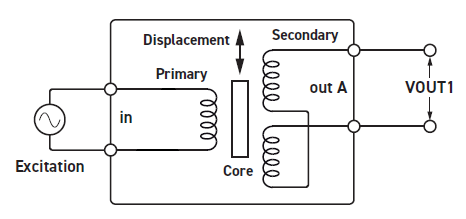
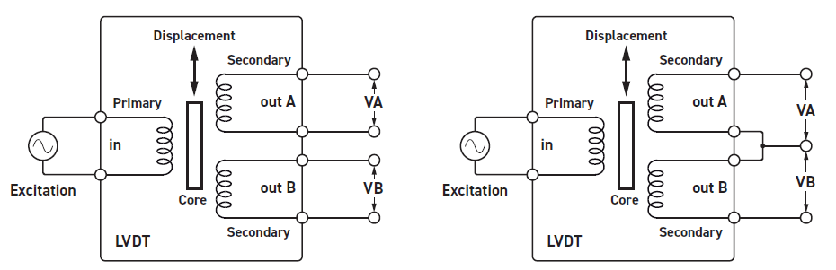
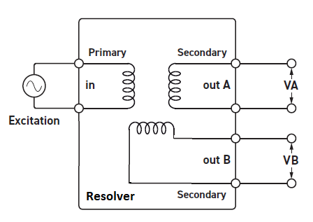
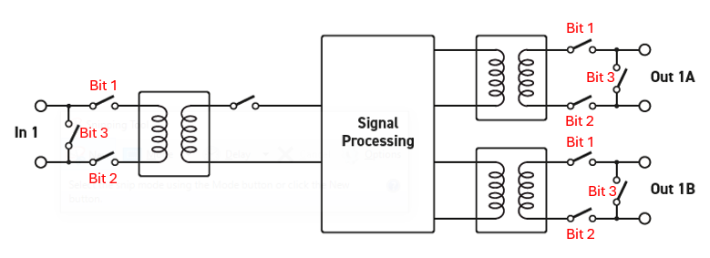

IO425 Usage Notes — Usage information about the I/O module
This section shows the different ways of connecting the IO425.
2-Wire[1]

4-Wire/3-Wire

Resolver

This section shows the control options for the input and output relays of each channel.

If you want to short the input (Bit 3) and open the other input relays (Bits 1 & 2), for example, write 0x04 to the In Ctrl vector for the element corresponding to the desired channel number.